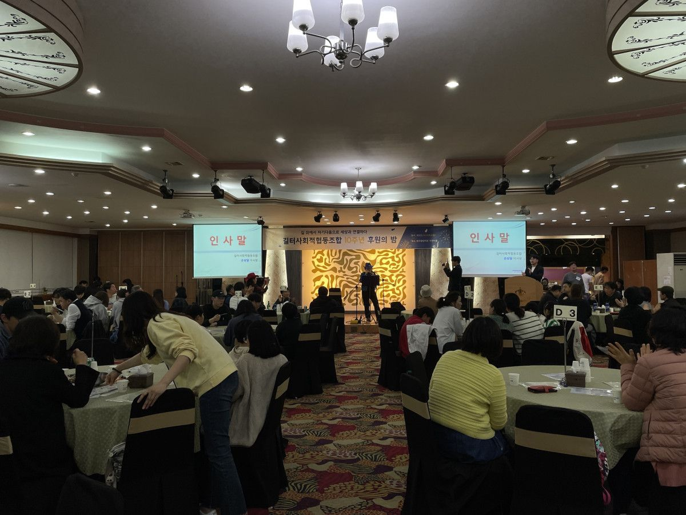
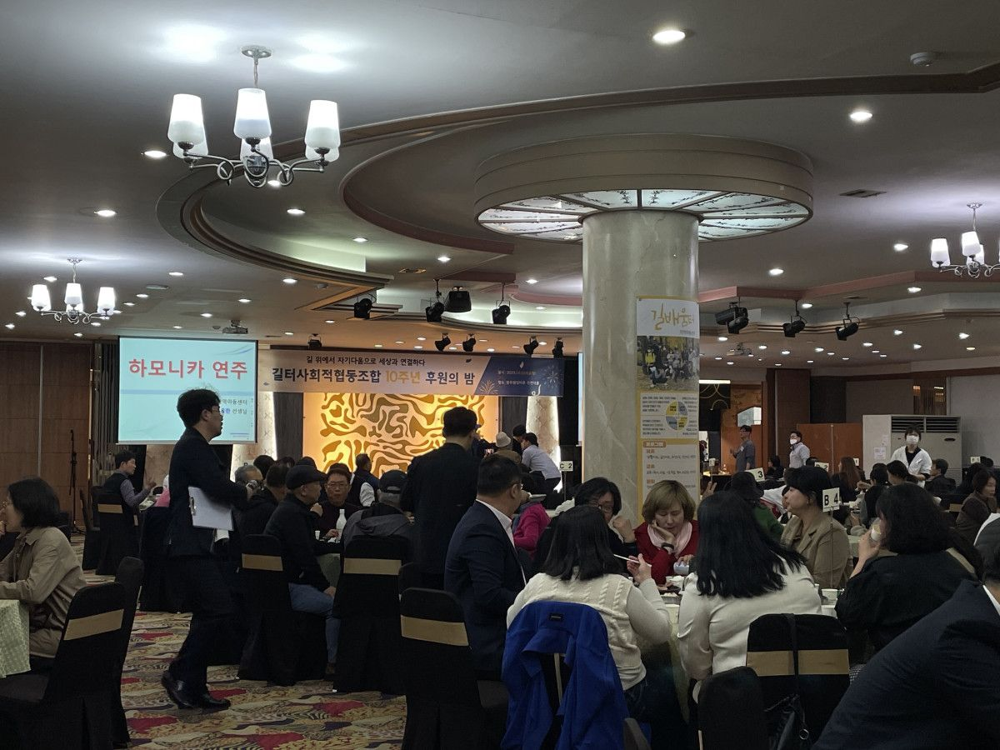
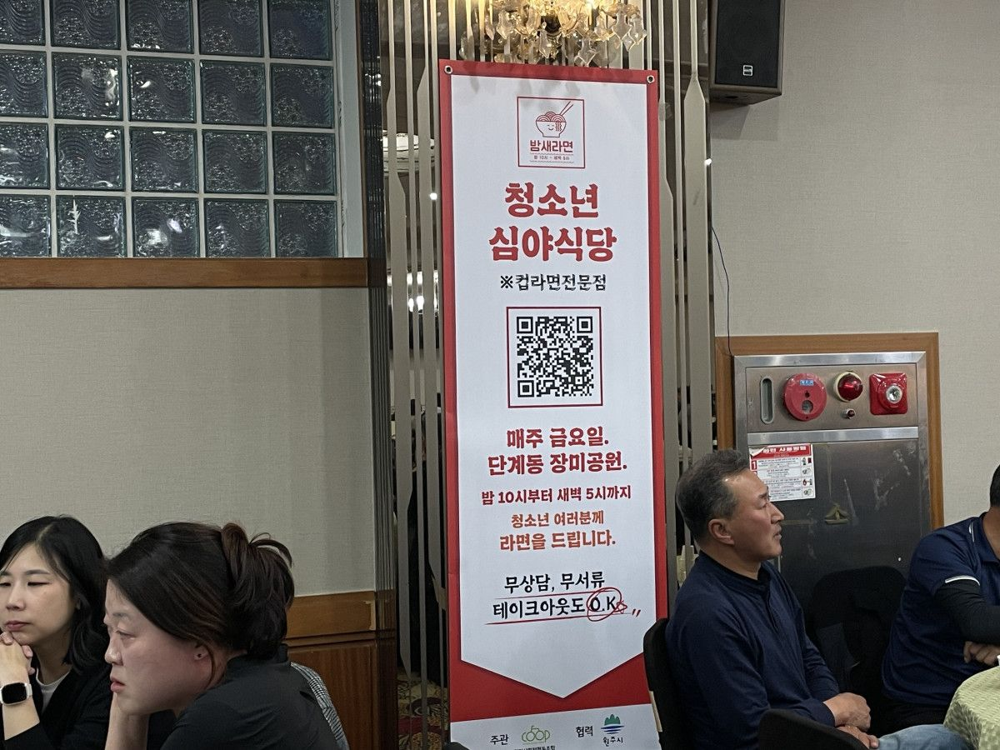
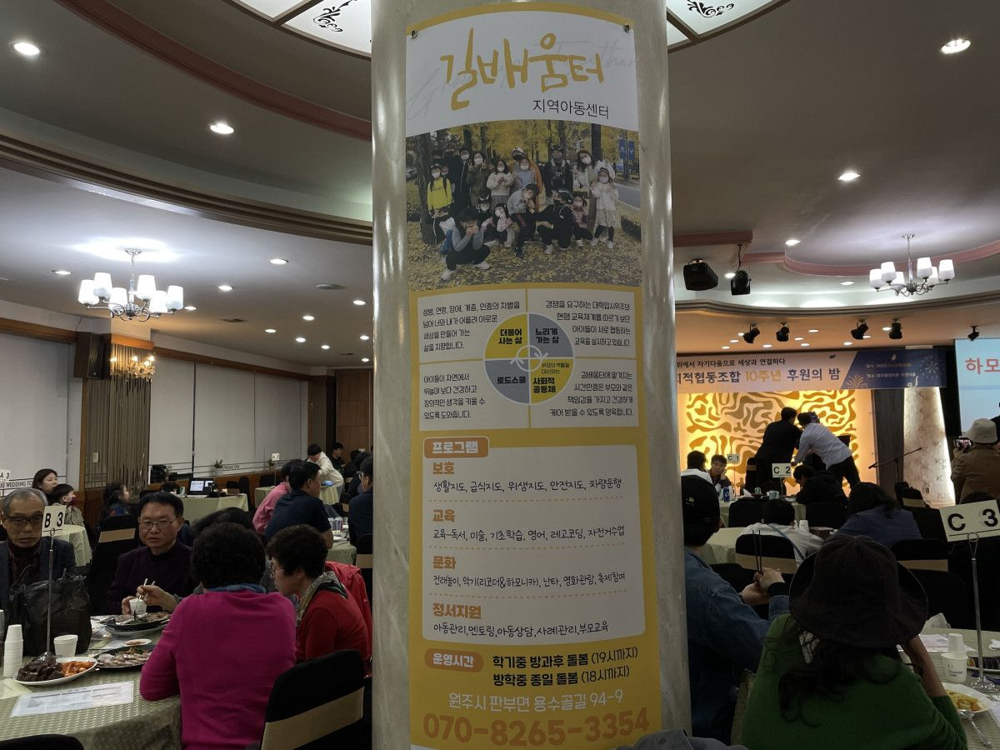
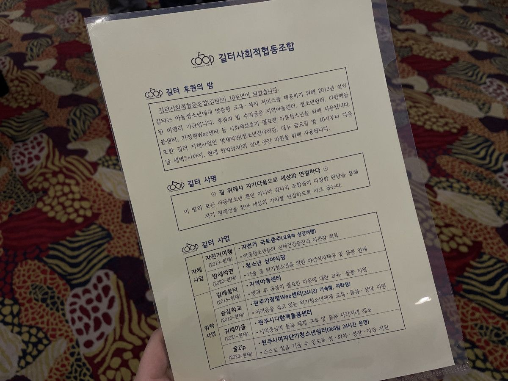
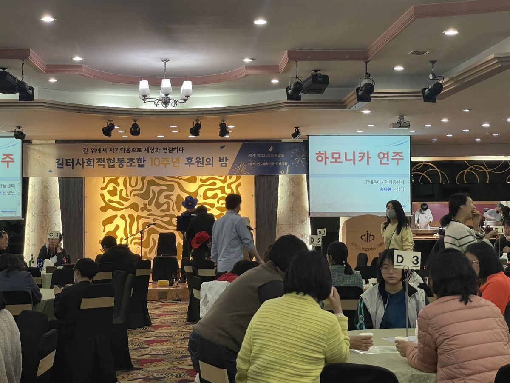
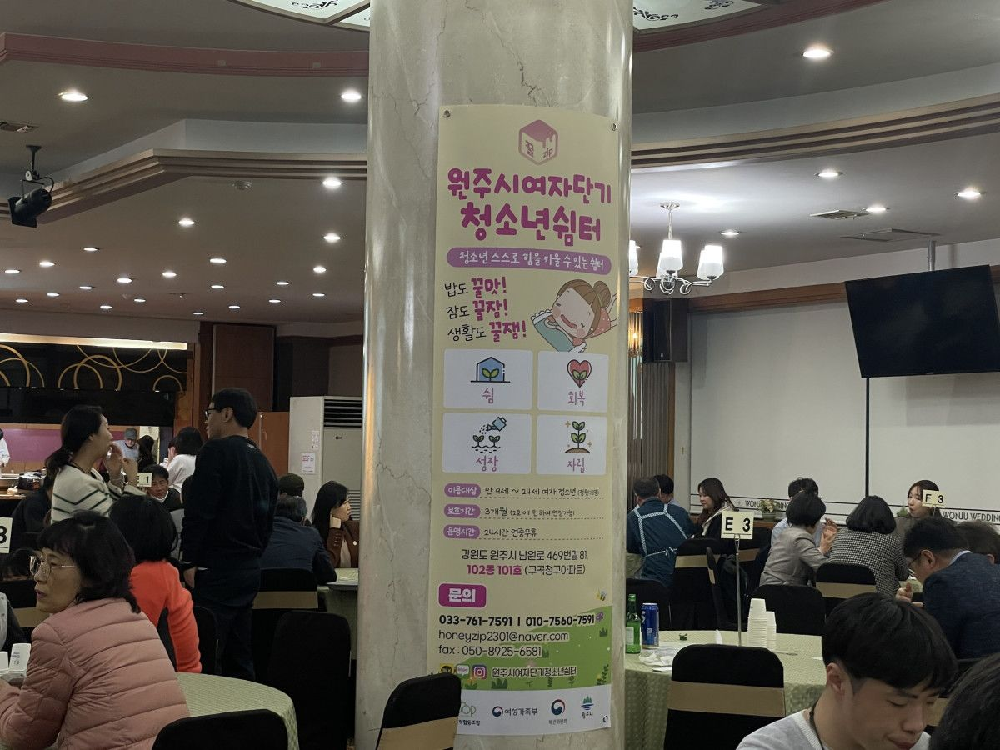

지난 4월 13일에는 네트워크의 조합원인 길터사회적협동조합의 <10주년 후원의 밤> 행사에 참석했습니다
'길 위에서 자기다움으로 세상과 연결하다'라는 사명으로 활동하는 길터사협은 아동청소년에게 맞춤형 교육ㆍ복지 서비스를 제공하기 위해 2013년에 설립된 비영리기관입니다.
후원의 밤 행사의 수익금은 사회적 보호가 필요한 아동청소년을 위해 사용되는데요.
좋은 취지때문일까요? 행사장에는 많은 분들이 함께해주셨습니다
#길터사회적협동조합 #10주년후원의밤






